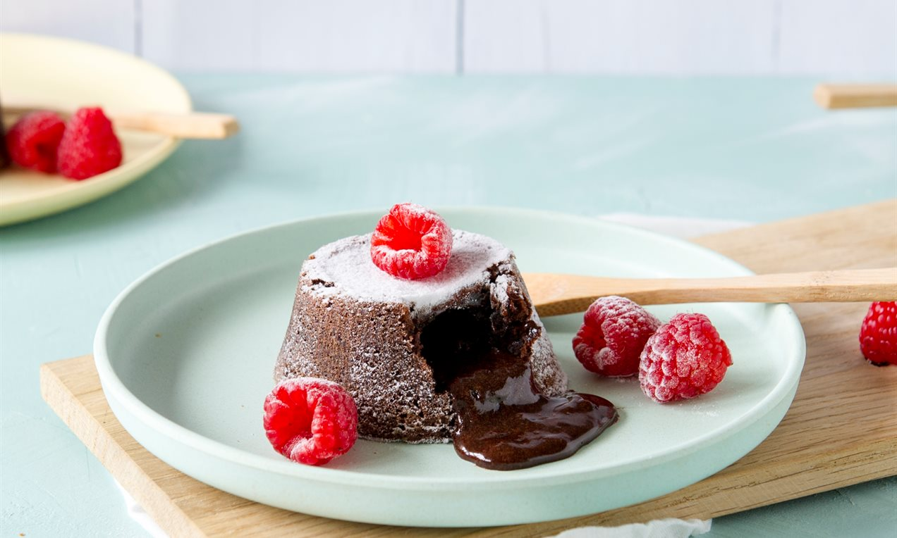
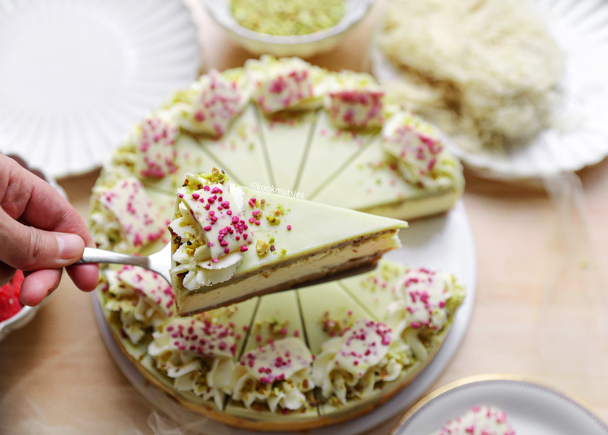

Ton dessert
Tout pour le dessert

Le lava cake:
ingrédients :
- 200g de chocolat pur
- 4 oeufs
- 4 jaune d'oeufs
- 130g sucre
- 200g beurre
- 100g farine
- Pincé de sel
Préparation :
- Préchauffer le four à 200°C.
- Faire fondre le chocolat et le beurre au bain-marie.
- Dans un bol, battre les oeufs, les jaunes d'oeufs et le sucre jusqu'à obtenir un mélange mousseux.
- Incorporer le mélange de chocolat fondu dans le bol.
- Ajouter la farine tamisée et une pincée de sel, puis mélanger jusqu'à obtenir une pâte homogène.
- Beurrer et fariner des moules individuels.
- Remplir les moules avec la pâte jusqu'à environ 3/4 de leur hauteur.
- Enfourner pendant 10-12 minutes, jusqu'à ce que les bords soient cuits mais le centre encore coulant.
- Laisser refroidir quelques minutes avant de démouler délicatement.
- Servir chaud, éventuellement accompagné de glace à la vanille ou de fruits frais.
Bon appétit !

Le cheesecake:
ingrédients :
- 200g de biscuits digestifs
- 100g de beurre fondu
- 600g de fromage à la crème
- 150g de sucre
- 3 oeufs
- 200ml de crème fraîche
- 1 cuillère à café d'extrait de vanille
Préparation :
- Préchauffer le four à 160°C.
- Émietter les biscuits digestifs et les mélanger avec le beurre fondu.
- Presser ce mélange au fond d'un moule à charnière pour former la croûte.
- Dans un grand bol, battre le fromage à la crème et le sucre jusqu'à obtenir une consistance lisse.
- Ajouter les oeufs un par un, en battant bien après chaque ajout.
- Incorporer la crème fraîche et l'extrait de vanille, puis mélanger jusqu'à homogénéité.
- Verser la préparation sur la croûte dans le moule.
- Cuire au four pendant 50-60 minutes, jusqu'à ce que le centre soit presque pris mais encore légèrement tremblotant.
- Laisser refroidir complètement, puis réfrigérer pendant au moins 4 heures avant de démouler et de servir.
Bon appétit !

L'amandine:
ingrédients :
- 200g de farine
- 100g de sucre
- 100g de beurre fondu
- 2 oeufs
- 100g de poudre d'amandes
- 200ml de lait
- 1 cuillère à café d'extrait d'amande
Préparation :
- Préchauffer le four à 180°C.
- Dans un bol, mélanger la farine et le sucre.
- Ajouter le beurre fondu, les oeufs, la poudre d'amandes, le lait et l'extrait d'amande. Mélanger jusqu'à obtenir une pâte lisse.
- Verser la pâte dans un moule beurré et fariné.
- Cuire au four pendant 30-35 minutes, jusqu'à ce que le dessus soit doré et qu'un cure-dent inséré au centre en ressorte propre.
- Laisser refroidir avant de démouler et de servir.
Bon appétit !